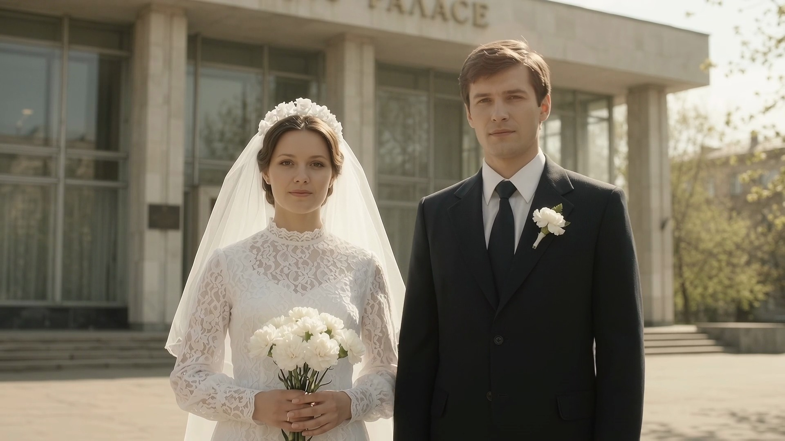

Вернём тепло, цвет и живые эмоции старым чёрно-белым и советским снимкам. Родные на фотографии снова мягко улыбнутся, посмотрят в камеру и обнимут друг друга — подарок, который трогает родителей до слёз счастья.
Потяните ползунок влево-вправо: убираем заломы бумаги, трещины и возвращаем живые цвета и эмоции

ДО: Старое ч/б фото с заломами (1978 г.) ПОСЛЕ: Реставрация, цвет и оживление Full HDВам не нужно искать сканер — достаточно перефотографировать бумажный снимок на телефон при дневном свете у окна
Вручную и с помощью нейросетей убираем трещины, царапины, заломы бумаги, блики от лампы и восстанавливаем чёткость глаз, улыбки и деталей одежды.
По вашему желанию бережно раскрашиваем чёрно-белые фотографии 1940–1980-х годов в естественные тёплые тона (или оставляем благородный архивный стиль).
Оживляем каждый кадр на 5–8 секунд: мягкий поворот головы, тёплая родная улыбка, объятие супругов — и собираем фильм с подписями годов и голосом рассказчика.
Выберите количество фотографий из вашего семейного альбома и нужные опции
Музыкальное оформление, титры с годами и подарочная веб-страница входят бесплатно!
Выберите удобный формат — от нескольких памятных кадров до большого фильма к юбилею родителей
Тариф